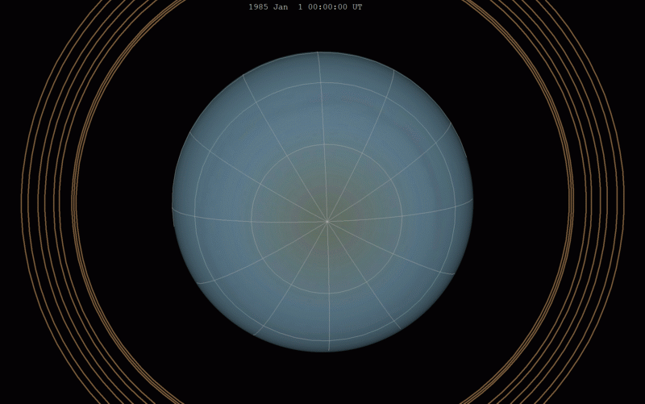
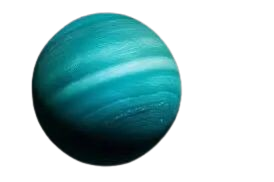

WHAT IS URANUS ?
Uranus (its symbol) is the seventh planet farthest from the sun, the third most massive planet in the solar system, and the fourth most massive. It is named after the god Uranus (ancient Greek: Οὐρανός) in Greek mythology. Although it is visible to the naked eye, it was not recognized by ancient civilizations as a planet, due to its dimness and slow rotation in its orbit.
WHAT IS THE COMPOSITION OF URANUS ?
The planet Uranus is one of the largest giant icy planets in the solar system, along with the planet Neptune, and the second least dense planet in the solar system after Saturn. Uranus consists of a small rocky core that forms its center, and is characterized by high temperatures, which may reach 4,892 degrees Celsius, and is surrounded by a hot, dense liquid that constitutes 80% of the planet’s mass. This liquid contains various forms of ice, such as water ice, ammonia, and methane. As a result of these icy liquids, the surface of the planet is not considered a solid surface, which makes it Landing spacecraft on it is impossible, in addition to the high pressure in the planet's atmosphere, which may lead to their destruction.

